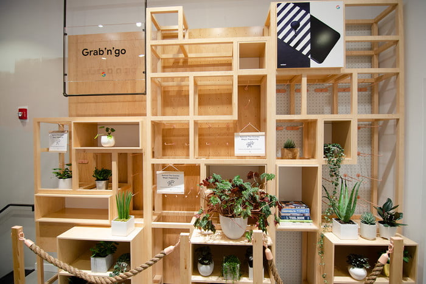

Let's work together
Interested in working with me? Let's talk; send me a message at
alejandra@sincero.tech.
Customer Experience and Service Design Project
My Role: Lead Facilitator and Customer Experience Designer
Timeframe: Ongoing for two years
Client: 30+ stakeholders from 5+ cross-functional teams
Goal: Design the best possible customer experience for the Google Hardware Popup Stores
© 9to5google.com
Retail is changing continuously to become more experiential in order to evoke the feeling and benefits a customer would have when owning a product. As a leader in this space, the Retail Marketing team at Google has launched a Retail Popup store, with a primary focus on experience, every year for three years now.
The goal for these Popup stores has been to allow customers to step into what their world would look like if it was fueled by the impressive hardware product lineup, including the Pixel, Pixelbook, Nest Hub, Google Home and more, which are all powered by the Google Assistant.
My challenge as the team's Customer Experience and Service Designer was to tie in the product experiences to the path to purchase, as well as ensure a seamless and smooth holistic, end-to-end experience throughout the Popup store narrative.
Through this service design approach of understanding the customer experience just as much as the employee experience and the in's and out's of the entire operation, we were able to create the most successful Pop up store yet, with the highest customer engagement, sales, and raving reviews to date.
We also uncovered a major pain point: the lack of product support available at the Popup stores was straining the experience from all sides. By finding this, we were able to promote the inclusion of product support for the top issues recognized in Popups from previous years and consequently ensure more customer satisfaction and less returns.
A reminder about the growing importance of experiences within retail and the necessity of establishing a bond between customer and device to drive conversion.
We also achieved a successful Grab'n'Go section which we had previously determined was imperative in order to avoid the formation of cues for customers who wanted to go directly to make a purchase.
© Julian Chokkattu/Digital Trends
© Julian Chokkattu/Digital Trends


© Julian Chokkattu/Digital Trends
In order to address the challenge of creating a cohesive in-store experience that ties in the narratives of all the diverse product experiences, my team and I designed multiple design thinking workshops throughout the year leading up to the launch of the Popup. Since this behemoth of a project that was the launch of the Popup naturally included many different groups of people, such as third party staffing and creative agencies, it was clear to us as CX and Service designers that utilizing journey maps and service blueprints as tools in our workshops would be essential.